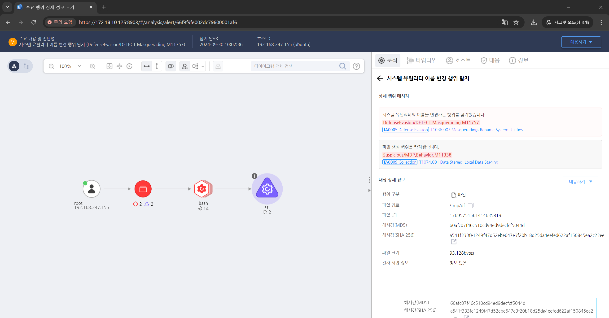

T1036.003.02 시스템 유틸리티 이름 변경
D3FEND
MITRE ATT&CK 액션을 기준으로 대응 방안을 작성
Detection
- CurrentProcess = "cp" AND
- Action = "FileCreate" AND
- TargetFile_Path "/bin" OR /sbin" OR "/usr/bin" OR "/usr/sbin" OR "/usr/local/bin" OR "/usr/local/sbin" AND "initramfs"
Detection(EDR)

Response
위장된 것으로 의심되는 파일이나 프로세스를 즉시 격리하여 추가적인 실행이나 네트워크 확산을 방지합니다.
Mitigations
애플리케이션 화이트리스트 적용 (M1038 - Execution Prevention)
- AppLocker 또는 WDAC(Windows Defender Application Control)을 사용하여 허용된 시스템 유틸리티만 실행 가능하도록 제한
- 시스템 유틸리티의 실행 경로 및 파일명을 기반으로 실행 정책을 설정하여 비정상적인 이름 변경 탐지
- Windows Controlled Folder Access 기능을 활용하여 보호된 디렉터리 내 파일 변경 방지
파일 무결성 검사 및 시스템 보호 (M1042 - Disable or Remove Feature or Program)
- System File Checker(SFC) 및 Windows Resource Protection(WRP) 기능을 활성화하여 시스템 유틸리티의 변조 감지 및 복구
- 정기적으로 Windows 및 Linux 시스템 유틸리티의 해시 값을 비교하여 변조 여부 확인
- 안티바이러스 및 EDR 솔루션을 사용하여 정상 파일이 변조되지 않도록 보호
로그 및 감사 활성화 (M1047 - System Logging & Monitoring)
- Windows Event Logging을 활성화하여 시스템 유틸리티 실행 및 변경 사항을 기록
- Event ID 4688 (새로운 프로세스 생성) 및 Event ID 4697 (서비스 설치) 모니터링
- PowerShell ScriptBlock Logging 및 명령 실행 기록 활성화하여 의심스러운 실행 탐지
프로세스 및 파일 변조 탐지 (M1040 - Behavior-Based Detection)
- EDR(Endpoint Detection and Response) 솔루션을 활용하여 시스템 유틸리티의 비정상적인 이름 변경 감지
- 비정상적인 경로에서 실행되는 시스템 유틸리티 차단 (예:
C:\Users\Public\svchost.exe)
- Windows Defender Exploit Guard 및 Attack Surface Reduction(ASR) 규칙을 적용하여 비정상적인 실행 방지
사용자 보안 인식 교육 (M1017 - User Training & Awareness)
- 공격자가 정상적인 시스템 유틸리티를 변조하는 방식에 대한 보안 교육 진행
- 비정상적인 실행 파일이나 시스템 유틸리티 실행 시 보안팀에 즉시 보고하도록 교육
- IT 및 보안 팀을 대상으로 정기적인 위협 헌팅 훈련 수행
Affected Techniques
Action 실행시 함꼐 영향을 받는 다른 Techniqes
| D3FEND |
| D3-FCA File Creation Analysis |
| D3-FIM File Integrity Monitoring |